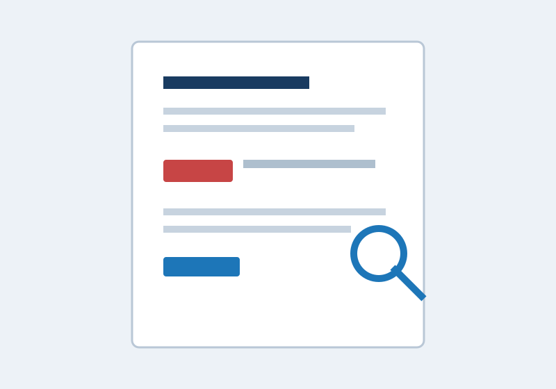

1. Исполнительное резюме
Раздел объясняет цели проверки и основные результаты на уровне, понятном руководителям и владельцам затронутых процессов.
Предпосылки и цели
Назначение тестирования, согласованный контекст, цели, область и изменения первоначальных условий.
Общая оценка защищённости
Насколько были достигнуты цели, какие системные проблемы обнаружены и какое влияние возможно для организации.
Профиль риска
Используемая модель оценки, общий уровень риска и объяснение факторов, повлиявших на результат.
Общие результаты
Сводная статистика, протестированные объекты, сценарии, успешность проверок и основные причины проблем.
Краткие рекомендации
Задачи по снижению выявленных рисков, ожидаемая сложность и принципы приоритизации.
Стратегическая дорожная карта
Приоритетный план исправлений, связанный с бизнес-целями, последствиями и моделью угроз.
